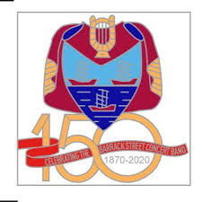

The Ultimate Trombone Players Website
Mark is a seasoned professional trombonist, yeilding over 25 years of player experience from classical, jazz, pop and show band. Mark brings his charasimatic and professional personality to every performance.
This player really shows his experienc with hands on experience from various differnet groups and a lifetime worth of playing exposer.
The Pearly Whites are a dynamic and experienced pop group with an exceptional brass section featuring trombone, saxophone, and trumpet. With over 25 years of combined experience across genres like pop, jazz, rock, and show bamd, each member brings their own unique flair to every performance.
This talented group truly shines with their deep musical knowledge and diverse playing experience, gained from performing with a wide range of bands and in various setiings.Their passion and versatility come through in every note, delivering high-energy, brass-driven renditions of your favourite pop, jazz, and rock anthems.

The Barrack Street Band is a prestigious concert band featuring a skilled brass, woodwind and precussion sections. With more than 150 years of establishment the band has a collective experience in classical, traditional, and brass ensemble music, each member brings a refined level of musicianship and elegnace to every performance.
This talented group excels in performain a broad range of classical and traditional brass band repertoire, including well-loved marches, fanfares, and symphonic brass arrangements. Drawings on their rich background in both performance and composition, they create a polished, rich sound that resonates with audiences and showcase the beauty of brass music.
Bean is an exceptional solo saxophonisit whose artistry spans across a wide range of gners, from classical and jazz to contemporary and fusion. With over 25 years of performance experience, James has honed his craft through extensive training and hands-on experience with various ensembles, offering a unique blend of technical skill and expressive depth in every performance. Known for his smooth, rich tone and intricate improvisations, he brings a fresh energy to every piece he plays, captivating his audience with every note.